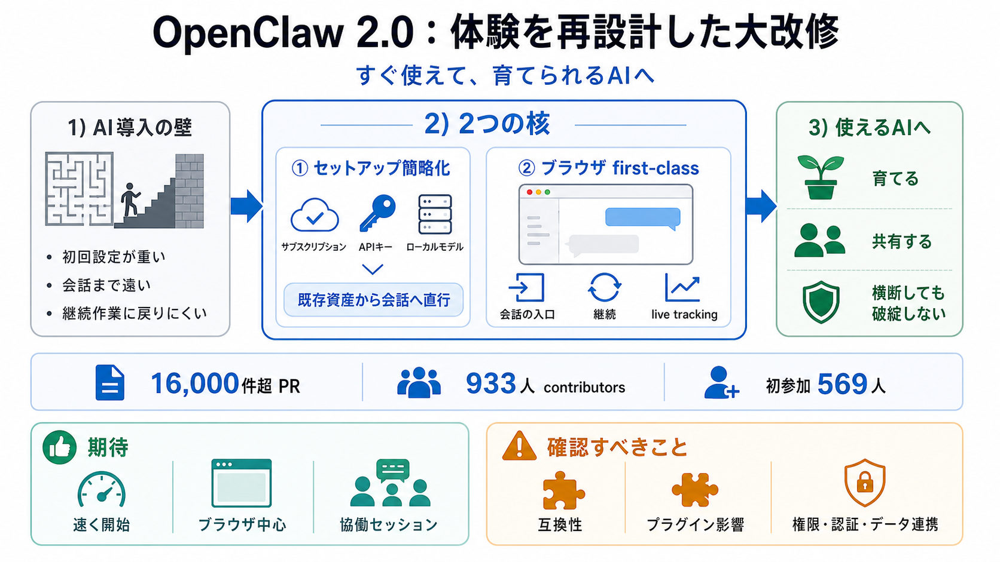

OpenClaw Releases OpenClaw 2.0: Guided Model Setup, 575 ms Control UI Startup, and One Trust Boundary Per Gateway
## Interactive explainer ## Key Takeaways v2026.8.1 lands 16,000+ PRs from 933 contributors, about half of OpenClaw's…

最大規模の体験改修
セットアップを簡単にし、ブラウザ体験をfirst-class（第一級）として再構築することで、「すぐ使えて、育てられるAI」へ近づく大アップデートです。
AI導入の壁
エージェントは「設定して動かす」までの壁が高くなりがちで、そこで離脱が起きやすくなります。
多段のセットアップ、会話に到達するまでの手戻り、継続作業への戻りにくさ、そして横断タスクの複雑化。
体験＝基盤
機能追加だけでは解決せず、インストール・会話・メモリ・権限・連携まで「運用の流れ」ごと整える必要があります。
個別機能の改善（追加・最適化）
体験の基盤を再設計（壊れにくさ＋導線＋継続）
変化の中心
OpenClaw 2.0の中核は「セットアップの簡略化」と「ブラウザ体験の一級化」です。
初回を既存資産（ChatGPT/Claudeサブスク、APIキー、ローカルモデル）前提にして早く会話へ。
会話から入り、設定の継続や進行中作業へ戻り、必要に応じてライブ追跡も可能。
規模が違う
16,000件超のPR、933人のコントリビュータ（初参加569人）による最大規模の体験改修です。
933人（初参加569人）
16,000件超
インストール／メッセージング／メモリ／スキル／モデル／オートメーション／ブラウザ・ネイティブ／プラグイン／セキュリティ
なぜ遅れた
変更量が膨大なため、既存ユーザーのアップグレードで壊れないことと、新規導入でも“使える状態”に到達することを慎重に確認する必要がありました。
従来のリリース基盤・出荷プロセスが性能限界を超えた
壊れない／到達まで迷わない（既存環境を前提に検証）
導線を短く
初回セットアップは「新規で全て作る」より、「既にある資産を取り込んで会話へ直行」へ方針転換しました。
ChatGPT / Claudeのサブスクリプション、APIキー、ローカルモデル
設定作業の多くを初期手順から切り離し、最初の会話までの時間を短縮
ブラウザ＝操作中心
ブラウザ側を、会話の入口・継続の場所・必要時のライブ追跡まで担う中心体験に作り直したと述べています。
会話から直接入る
設定の継続／進行中作業へ戻る
ライブ追跡（live tracking）で状況を見ながら進める
育つワークフロー
単純なワークフロー（例：メール監視→Telegram通知）から始め、タスクが複数の場所へ広がっても使いづらくしない設計思想です。
メール監視 → Telegram通知
横断しても操作性が破綻しない
広がっても破綻しない
OpenClaw 2.0は「便利なClawが増える」ことを目標にしつつ、ワークフローの増加が自動的に複雑さを爆増させない方向を示します。
タスクが横断すると操作が散らかり、戻りや引き継ぎが難しくなる
増えても使い方が破綻しない導線・拡張の仕組み
協働を現実に
共有クラウドセッションにより、知識や文脈を失わずに他者を作業へ参加させたり引き継いだりでき、チーム用途で協働が成立する方向を強調しています。
文脈を保ったまま協働（参加・引き継ぎ）
マルチプレイヤー的に運用できる
主張の強み
初回の壁を下げる設計（既存資産スタート）と、日常的に使い始めやすいブラウザを中心に据える戦略が、中心論点に直結します。
初回で会話へ到達しやすく、離脱要因を減らす
ブラウザを第一級の操作空間にして成功確率を上げる
未検証の論点
抜粋だけでは、互換性維持の具体やセキュリティの変更内容、アップグレード条件でのリスクを検証できません。
アップグレード互換性、プラグイン影響、残留リスクの可能性
権限・認証・データ連携への具体的な対策や評価方法の不足
結論
OpenClaw 2.0は「速く使い始め、育て、共有できる」方向へ前進する大規模リリースです。ただし導入判断は、リリースノート／移行ガイド／セキュリティ資料で互換性とリスクを数値化して確認するのが安全です。
アップグレード時挙動、プラグイン／モデル／スキル互換性、権限と認証の扱いを確認
ブラウザ中心の体験で、会話から継続・追跡・協働へ自然に繋がる
## Interactive explainer ## Key Takeaways v2026.8.1 lands 16,000+ PRs from 933 contributors, about half of OpenClaw's…
fix(auth): inherit the shared auth store once it owns credentials #130264 fix(agents): publish SecretRef Codex API-key …
Shared cloud sessions turn OpenClaw into a multiplayer tool, with owners or administrators deciding whether someone else…
More robust local runtime state: SQLite checkpoints, workspace reads, gateway process signalling, plugin HTTP responses,…
A user-built dashboard inside a shared multiplayer OpenClaw workspace (source: OpenClaw) Other defensive improvements i…